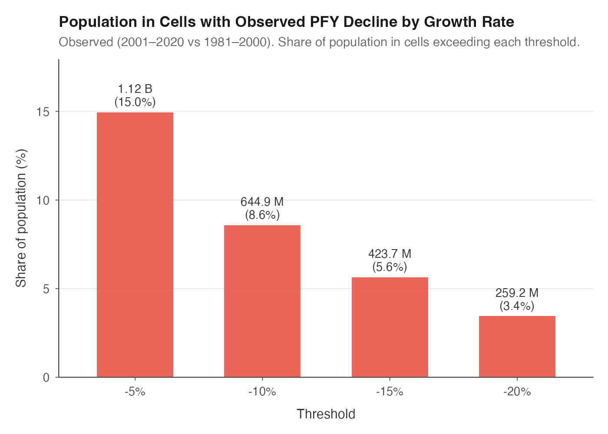
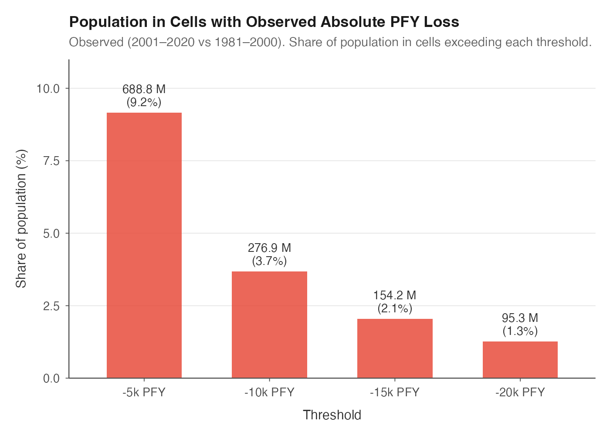
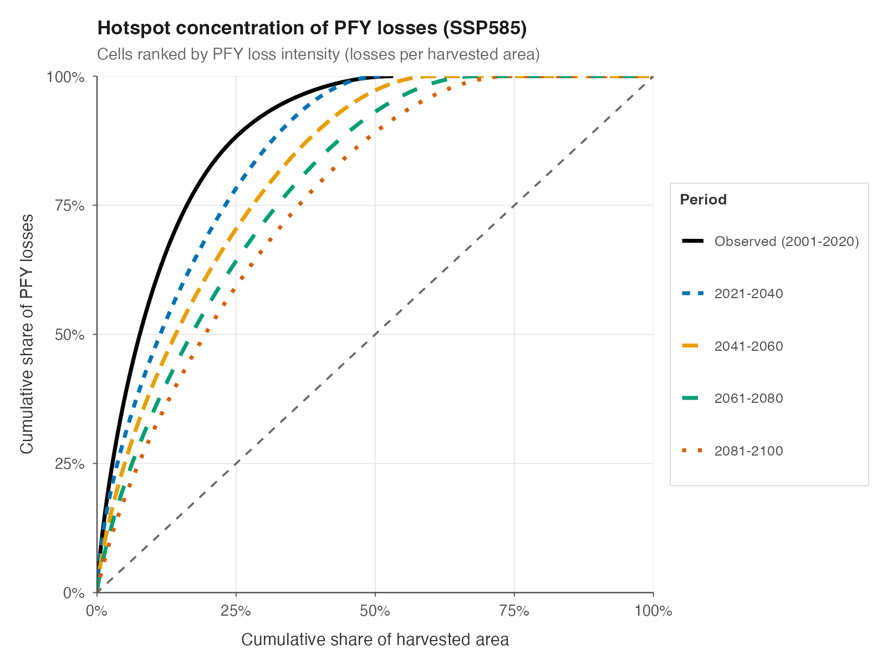
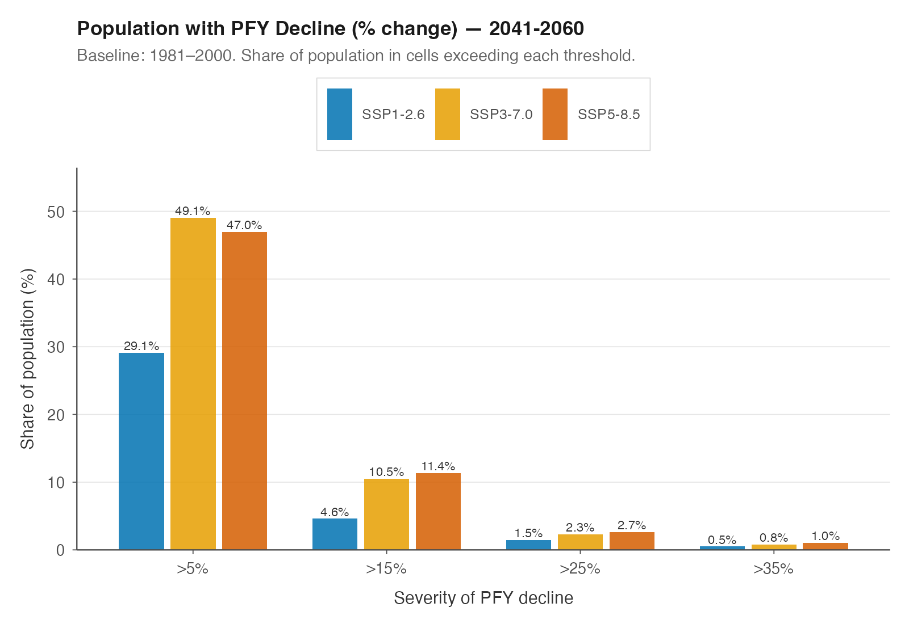
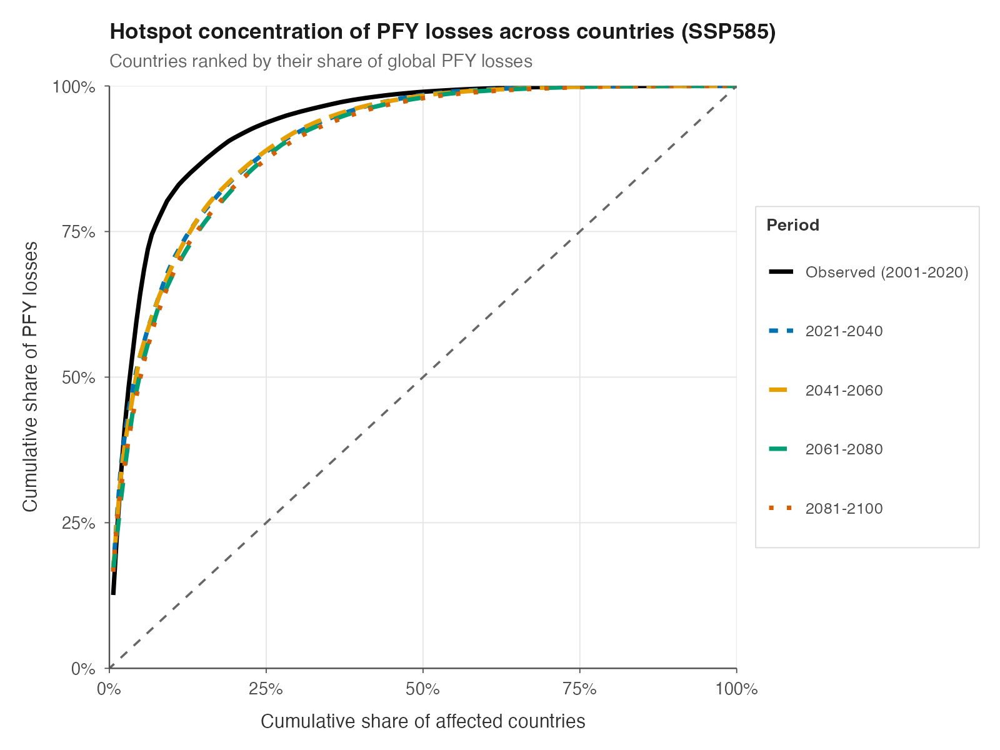
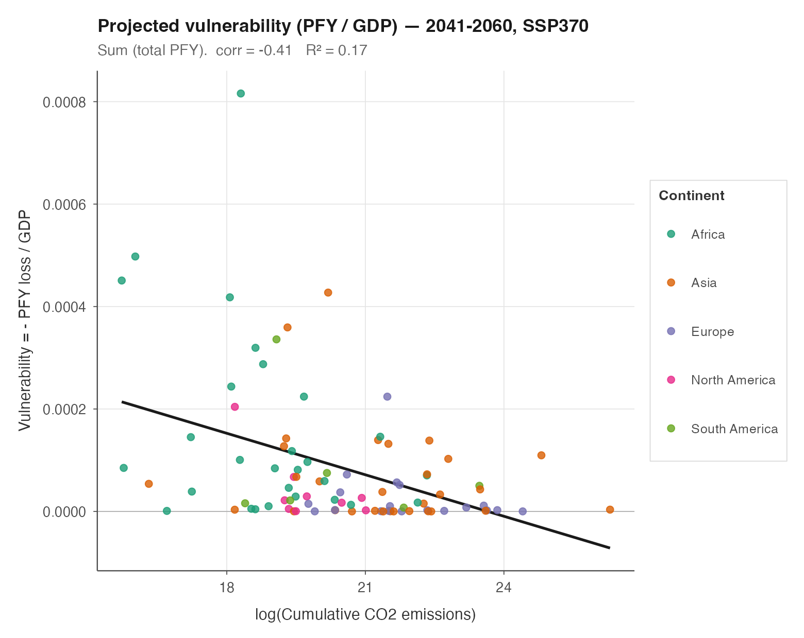

The figures below provide the evidence behind each key finding.
1. Climate change is already eroding food production for hundreds of millions of people
More than 640 million people already live in agricultural areas where PFY is down by more than 10% compared with 30 years ago. Nearly 690 million live in places that now produce enough food for 5,000 fewer people per year than they once did.

Population living in cells with observed percentage PFY decline exceeding each threshold (2001–2020 vs 1981–2000).

Population living in cells with observed absolute PFY loss exceeding each threshold (2001–2020 vs 1981–2000).
2. The parts of global agriculture with the least built-in protection are already taking the biggest losses
About 16% of global cropland has already lost more than 10% of its productivity. But rainfed farming is more exposed: around 20% of rainfed cropland has lost at least 10%, and nearly 5% has lost more than 30%.

Share of global agricultural land with observed PFY decline exceeding various thresholds.

Share of irrigated and rainfed area with observed PFY decline exceeding various thresholds. Rainfed cropland is consistently more exposed.
3. A small number of hotspots already account for a disproportionate share of the global damage
Today, just 5% of agricultural land accounts for 35% of all PFY losses.

Hotspot concentration of PFY losses (SSP5-8.5). Cells ranked by loss intensity. Lines above the diagonal indicate that losses are concentrated in a small share of land. Baseline: 1981–2000.
4. Losses are likely to accelerate: by mid-century, nearly half of the world could be living in declining agricultural zones
Today, around 15% of the global population lives in cells with at least a 5% decline in PFY. By 2041–2060, that rises to 49% under SSP3-7.0. Roughly 25% of countries account for 85–90% of total global losses by mid-century.

Share of population in cells with percentage PFY decline exceeding each threshold, 2041–2060. All three SSP scenarios shown. Baseline: 1981–2000.

Concentration of PFY losses across countries (SSP5-8.5). Countries ranked by their share of global losses. Baseline: 1981–2000.
5. The geography of climate change is highly uneven
Climate change is reshaping agricultural productivity in very unequal ways across regions. Tropical regions bear the brunt of losses, while some high-latitude areas gain.

PFY change by latitude (SSP5-8.5, 2041–2060). Mean and percentile lines over binned cells. Tropical regions between 20°S and 20°N bear the heaviest losses. Baseline: 2001–2020.
6. Those least responsible are the least able to absorb the shock
The countries that contributed least to cumulative CO₂ are among the most vulnerable, and that relationship strengthens over time.

Per-capita vulnerability vs cumulative CO₂ emissions (projected 2041–2060, SSP3-7.0). Vulnerability = −PFY / GDP. Only countries with PFY losses shown. Baseline: 2001–2020.